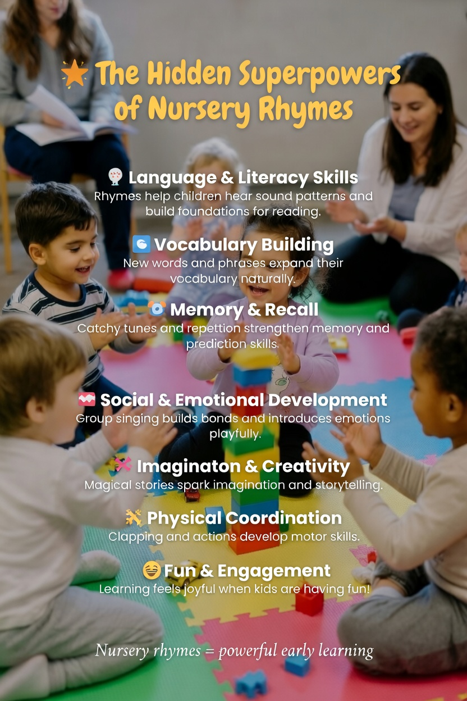

Stay Tech is the use of technology to empower Stay N' Play groups. A central hub for parents and caregivers to discover, book, and share stay and play activities in their local communities.
Our platform connects parents with local stay and play groups, providing a convenient way to find and participate in activities that promote early childhood development and social interaction.
Find and join stay and play events in your area to support your child's development.
View EventsParents and caregivers can create an account to access personalized features such as event recommendations, booking management, and community engagement tools. By creating an account, Users can save their preferences, track their bookings, and connect with other parents and caregivers in their local community.
